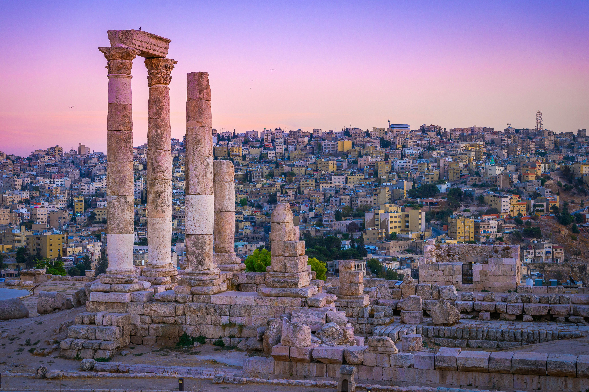
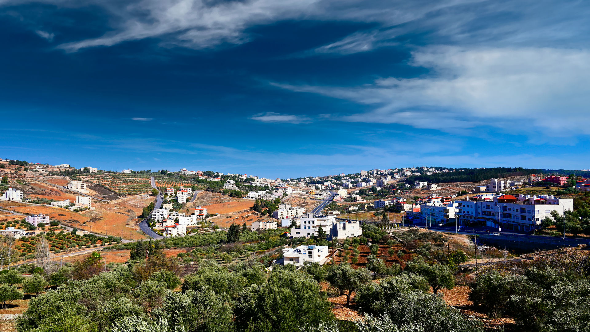
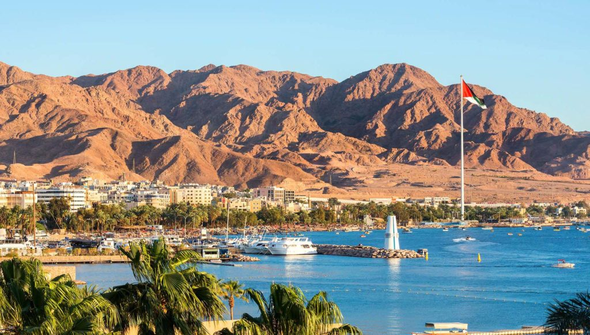
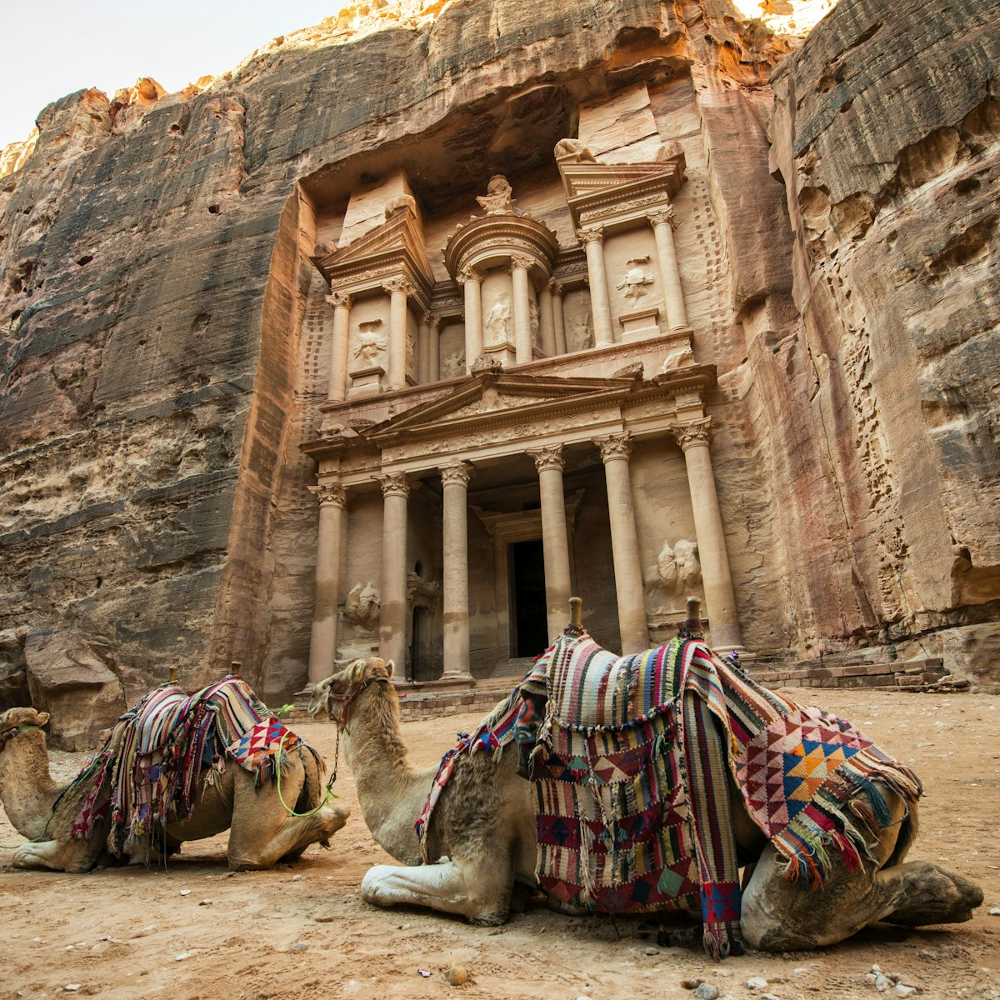
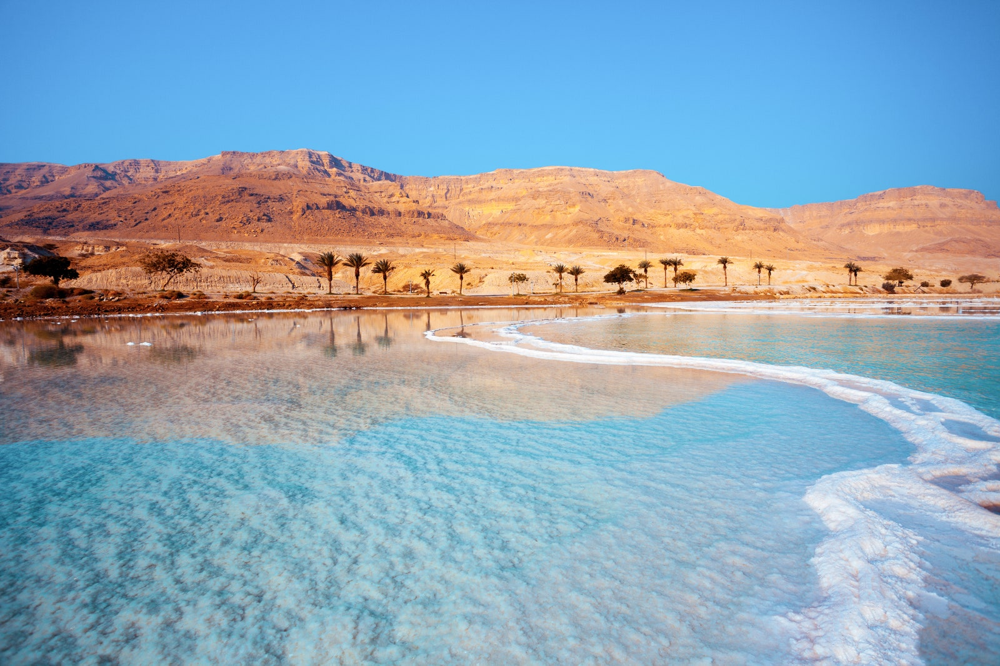
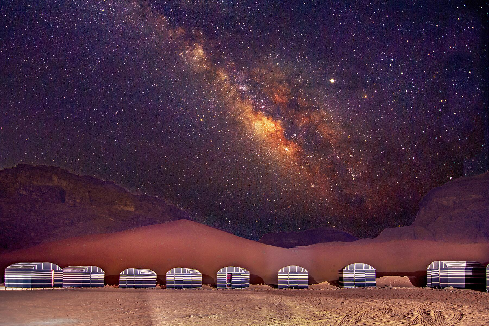
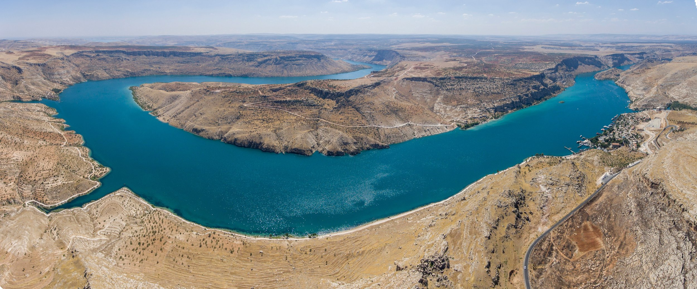
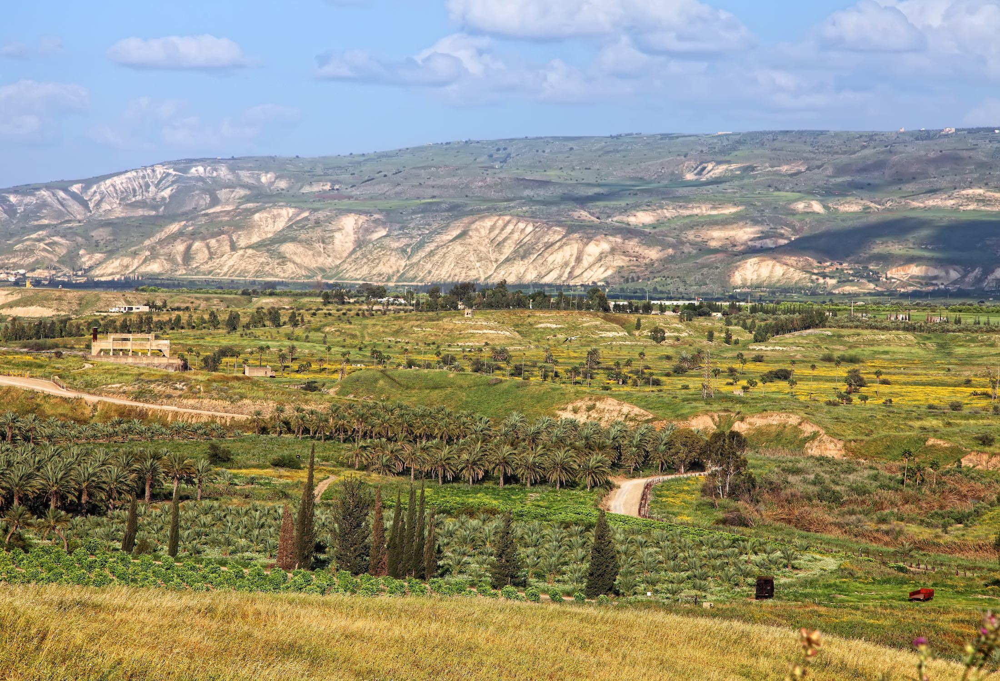
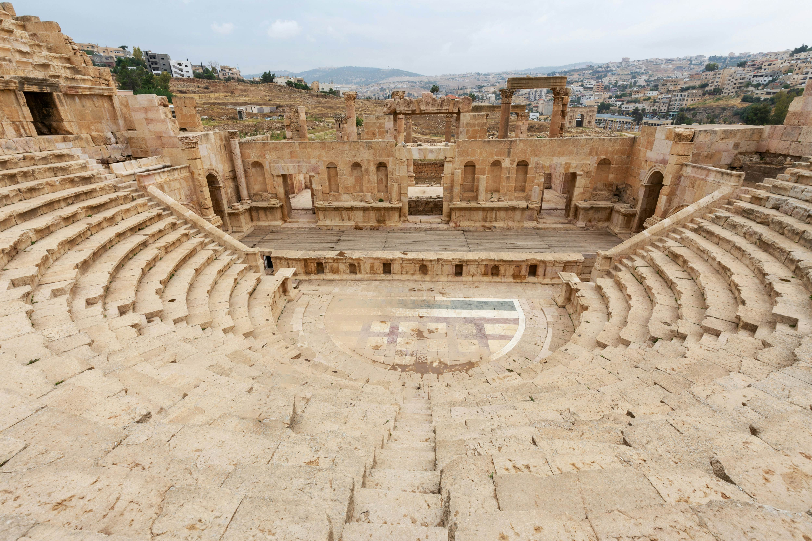
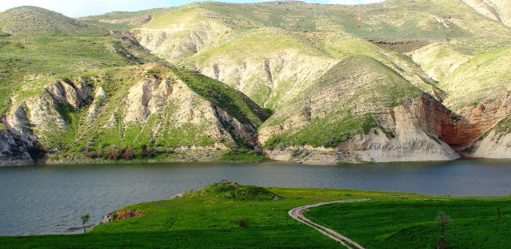

Amman
The capital of Jordan. Amman is a vibrant city known for its unique blend of ancient
and modern elements. It boasts a rich history, with landmarks such as the Roman Theatre
and the Amman Citadel, which offer glimpses into its past. The city is also a cultural
hub, featuring bustling markets, contemporary art galleries, and diverse culinary scenes.

Fuheis
My family's home town located just northwest of Amman, Jordan. Known for its predominantly
Christian population, Fuheis is celebrated for its charming atmosphere, traditional architecture,
and vibrant community life. The town is surrounded by picturesque hills and greenery and also hosts
various cultural and religious festivals, reflecting its rich heritage and close-knit community.

Aqaba
Jordan's only coastal city on the Red Sea, is renowned for its stunning beaches and excellent
diving spots featuring vibrant coral reefs and diverse marine life. The city also boasts historical
sites like the Aqaba Fort.

Petra
An ancient city in southern Jordan, is renowned for its rock-cut architecture and water conduit
system, famously including the iconic Treasury (Al-Khazneh). As a UNESCO World Heritage site and
one of the New Seven Wonders of the World, Petra attracts tourists from around the globe, offering
a glimpse into the rich history of the Nabatean civilization.

The Dead Sea
Located at the lowest point on Earth's surface between Jordan and Israel, is famous for its highly
saline waters that allow swimmers to float effortlessly. Known for its therapeutic properties and
mineral-rich mud, the Dead Sea is a popular destination for wellness and relaxation.

Wadi Rum
Often called the "Valley of the Moon," is a vast desert landscape in southern Jordan known for
its stunning red sandstone mountains and dramatic rock formations. This UNESCO World Heritage
site is popular for activities like rock climbing, camel trekking, and stargazing, offering a
unique glimpse into Jordan's natural beauty and Bedouin culture.

The Jordan River
Flowing through the Great Rift Valley, is a historically significant waterway that marks the
border between Jordan and Israel. Renowned for its biblical importance, it is the site where
Jesus is believed to have been baptized, attracting pilgrims and visitors from around the world.

The Jordan Valley
A fertile region in Jordan, extending from the Sea of Galilee to the Dead Sea, known for its
agricultural productivity and lush landscapes. This valley, part of the Great Rift Valley,
also holds significant historical and cultural importance, with numerous archaeological sites
and ancient ruins scattered throughout the area.

Ajloun
A town in northern Jordan, is famous for its medieval Ajloun Castle, built by the Ayyubids
in the 12th century to defend against Crusader incursions. Surrounded by lush forests and
rolling hills, Ajloun is also a popular destination for nature lovers and hikers, offering
scenic trails and the Ajloun Forest Reserve.

Jerash
Located north of Amman, is known for its remarkably preserved Roman ruins, including the
monumental Hadrian's Arch and the impressive Oval Plaza. This ancient city, often referred
to as the "Pompeii of the East," offers visitors a glimpse into its rich history through its
well-preserved theaters, temples, and colonnaded streets.

Madaba
Known as the "City of Mosaics," is famous for its ancient mosaic map of Jerusalem and the
Holy Land, dating back to the 6th century AD, located in the Greek Orthodox Church of St. George.
This charming town, south of Amman, offers visitors a glimpse into Jordan's rich Byzantine
history and culture through its well-preserved mosaics and archaeological sites.

Irbid
Located in the north of Jordan, is known for its vibrant academic community, with several
universities and colleges contributing to its lively atmosphere. The city also features
historical sites like the Roman ruins of Gadara, offering visitors a blend of modern
education and ancient history to explore.


{kind=link}
{kind=link}
{kind=link}
{kind=link}
{kind=link}
{kind=link}
{kind=link}
{kind=link}
{kind=link}
{kind=link}